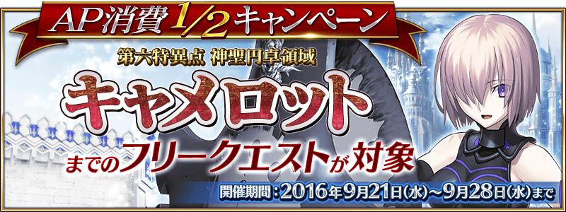

第六特異點 神聖圓卓領域 卡美洛為止的全部Free關卡的AP消費以期間限定變為1/2。
無論如何藉此機會，挑戰Free關卡吧！
◆AP消費1/2期間◆
2016年9月21日(三) 16:00～9月28日(三) 12:59
◆對象◆
冬木、奧爾良、羅馬七省、歐開諾斯、倫敦、合眾為一、卡美洛內全部的Free關卡
※冬木、奧爾良、羅馬七省、歐開諾斯、倫敦、合眾為一、卡美洛內全部的主線關卡、幕間物語為對象外。
實施原預定在600萬DL突破宣傳活動實施的「曜日關卡小翻新！」。
對自這次的翻新後在修練場關卡出現的敵人，追加在主線關卡第三章～第五章登場的敵人。
｢精霊根｣｢血の涙石｣｢戦馬の幼角｣｢黒獣脂｣｢無間の歯車｣｢ホムンクルスベビー｣｢隕蹄鉄｣等，目前為止不會在修練場掉落的道具開始掉落。
另外，在期間限定活動「夏日！ 大海！ 開拓！ FGO 2016 Summer」初登場的敵人，也會做為修練場關卡出現敵人追加。
因此「追憶の貝殻」會在修練場關卡掉落。
※請注意在各關卡的道具掉落率並非100%。
|
◆翻新實施日◆ ◆對象關卡◆ |